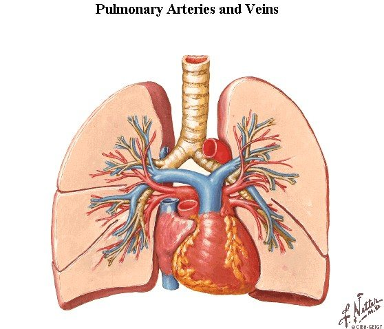
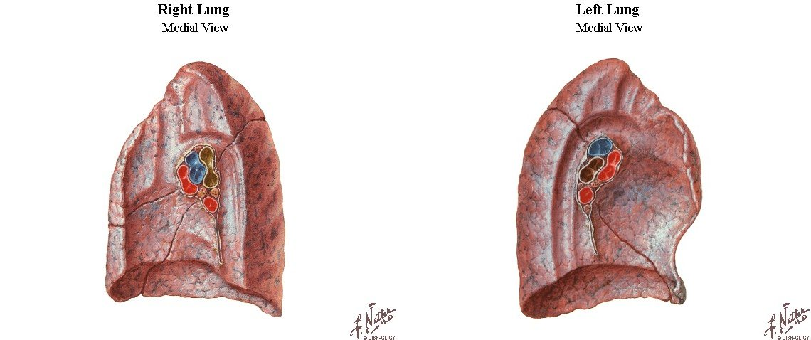
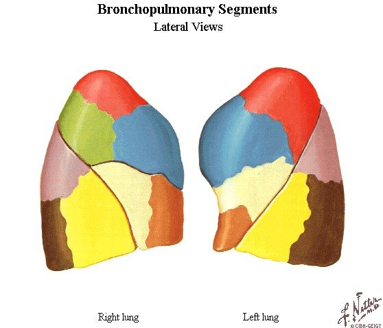
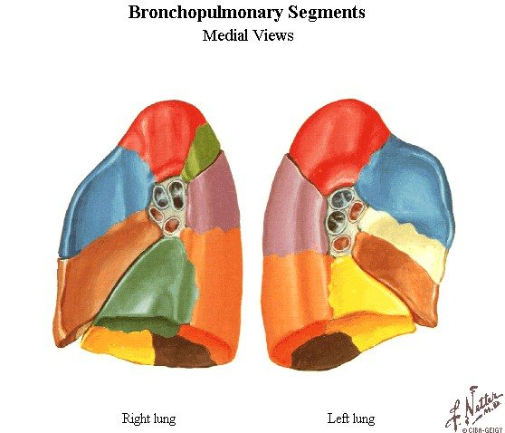
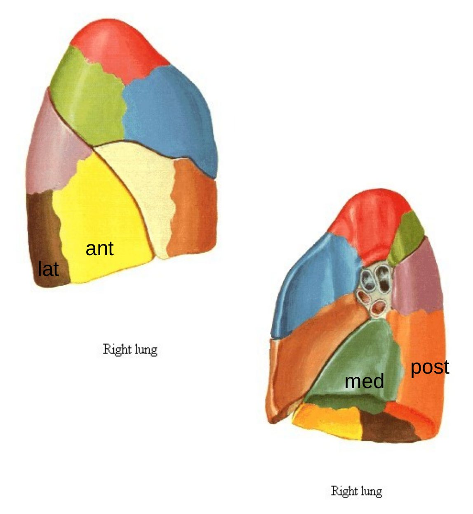
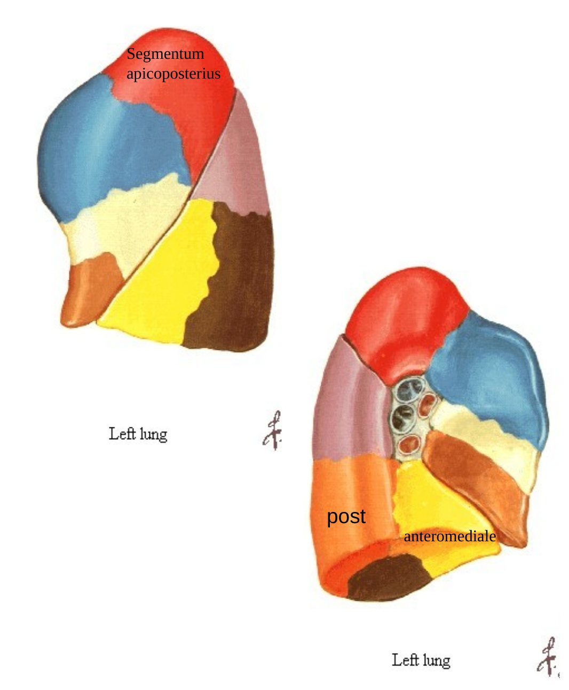

Bölüm 5 · Pulmones ve arbor bronchialis
Akciğer, yaklaşık 23 kez ikiye ayrılan bir hava yolu ağacının ve bu ağacı adım adım izleyen bir damar ağacının çevresine sarılmış süngerimsi bir organdır. Bu bölüm önce akciğerin dışını (yüzler, loblar, kök), sonra içini (trakeadan alveole kadar hava yolu, asinüs ve lobül) ve en sonunda cerrahinin ve klinik lokalizasyonun temel birimi olan bronkopulmoner segmentleri anlatır.
Akciğerler (pulmones) iki pulmoner boşluğun içinde, mediastinumun iki yanında yer alan, koni biçimli organlardır. Canlıda yumuşak, hafif ve süngerimsidir. İçindeki hava nedeniyle suda yüzer. (Hiç nefes almamış bir fetüsün akciğeri ise batar. Adli tıpta bebeğin doğumdan sonra yaşayıp yaşamadığını anlamak için kullanılan eski bir test buna dayanır.) Çocukta pembedir. Erişkinde, özellikle şehirde yaşayanlarda ve sigara içenlerde, solunan karbon parçacıklarıyla grimsi-siyah lekeler kazanır (antrakoz). Sağ akciğer yaklaşık 620 g, sol akciğer yaklaşık 560 g ağırlığındadır. Sağ akciğer daha geniş ve daha ağır, ama daha kısadır, çünkü sağ diyafram kubbesi karaciğer nedeniyle daha yüksektedir. Sol akciğer daha dar ve daha uzundur, çünkü kalbin büyük kısmı soldadır.
Bölümleri. Her akciğerin bir tepesi, bir tabanı, üç yüzü ve kenarları vardır:
Loblar ve fissürler. Sağ akciğer iki fissürle üç loba ayrılır: fissura obliqua alt lobu (lobus inferior) diğerlerinden ayırır, fissura horizontalis üst lob (lobus superior) ile orta lobu (lobus medius) ayırır. Sol akciğerde yalnızca fissura obliqua vardır ve iki lob (superior ve inferior) bulunur. Sol üst lobun incisura cardiaca'nın altında öne doğru uzanan dil biçimli parçasına lingula denir. Lingula sağ orta lobun soldaki karşılığıdır: aynı yerleşimdedir ve benzer biçimde iki segment içerir (5.6). Fissürlerin önemli bir kısmı tam değildir. Komşu loblar fissürün dibinde parankim köprüleriyle birbirine bağlıdır. Bu köprüler loblar arasında hava geçişine (kollateral ventilasyon) ve bir lobdaki hastalığın komşu loba yayılmasına izin verir.
Mediastinal yüzdeki izler. Mediastinum içindeki organlar, özellikle formolle sertleştirilmiş akciğerlerde mediastinal yüzde belirgin izler bırakır. Bu izler her akciğerin hangi yapılarla komşu olduğunu gösterir ve sağ ile sol mediastinal yüzün neden farklı olduğunu anlatır:
| Sağ akciğer | Sol akciğer |
|---|---|
| Kalp izi (sağ atriyum); sığdır | Kalp izi (sol ventrikül); derindir, incisura cardiaca ile devam eder |
| Hilusun üstünde öne-arkaya kıvrılan v. azygos kemerinin oluğu | Hilusun üstünde arcus aortae'nın oluğu; hilusun arkasında dikey inen aorta descendens oluğu |
| VCS ve sağ v. brachiocephalica oluğu (önde, yukarıda); aşağıda VCİ oluğu | A. subclavia sinistra ve a. carotis communis sinistra oluklarından yukarıda; sol v. brachiocephalica |
| Trakea ve sağ n. vagus (hilusun üstünde ve arkasında) | Özofagus (tabana yakın, aortanın önünde) |
| Özofagus oluğu (hilusun ve lig. pulmonale'nin arkasında, boylu boyunca) | Timus ve yağ dokusu (önde) |
Tablo 5.1 — Akciğerlerin mediastinal yüzlerindeki izler. Sağ akciğer bir "venöz" tarafa (VCS, v. azygos, VCİ, sağ atriyum), sol akciğer bir "arteriyel" tarafa (aorta, sol ventrikül, a. subclavia ve a. carotis) yaslanır.

Hilus pulmonis (hilum) mediastinal yüzde yapıların akciğere girip çıktığı alandır. Radix pulmonis (akciğer kökü) ise akciğeri mediastinuma bağlayan ve hilustan giren yapıların bütünüdür: ana bronş (ya da lob bronşları), a. pulmonalis, iki v. pulmonalis, bronşiyal arter ve venler, pulmoner sinir pleksusu, lenf damarları ve bronkopulmoner (hiler) lenf düğümleri. Kök, plevranın oluşturduğu manşonun içindedir (Bölüm 4.2). Lig. pulmonale bu manşonun kökün altında sarkan kısmıdır ve üst ucunda alt pulmoner ven bulunur.

Kökteki yapıların dizilimi. Bu dizilim sınavların sevdiği bir ayrıntıdır ve iki kurala indirgenebilir (Şekil 5.3):
Kökün komşulukları. Kökün önünden n. phrenicus ve a. ile v. pericardiacophrenica, arkasından n. vagus geçer. Bu "frenik önde, vagus arkada" kuralı, iki sinirin mediastinumdaki bütün seyrini akılda tutmanın anahtarıdır (Bölüm 7). Sağ kökün önünde VCS, üstünde v. azygos'un kemeri, arkasında özofagus vardır. Sol kökün üstünde arcus aortae kemer yapar, arkasında aorta descendens iner.
Trakea (soluk borusu) gırtlağın devamıdır. Krikoid kıkırdağın alt kenarından (C6) başlar, boyunda ve üst mediastende orta hatta iner ve angulus sterni hizasında (T4-T5 diski) iki ana bronşa ayrılır. Erişkinde yaklaşık 10-12 cm uzunluğunda ve 2 cm çapındadır. Duvarında 16-20 adet C biçimli hiyalin kıkırdak halka bulunur. Halkalar arkada açıktır. Bu açıklığı düz kas (m. trachealis) ve fibroelastik bir zar (paries membranaceus) kapatır ve doğrudan özofagusa yaslanır. Arkanın açık olması iki işe yarar: yutulan lokma geçerken özofagus öne doğru genişleyebilir; öksürükte m. trachealis kasılarak lümeni daraltır ve havanın hızını artırır.
Karina. Son trakea kıkırdağı ikiye ayrılma yerinde içeriye bakan omurga biçimli bir çıkıntı oluşturur: carina tracheae. Karinanın mukozası öksürük refleksi açısından trakeanın en duyarlı yeridir. Bronkoskopide karina iyi bir işarettir: açısının genişlemesi ya da keskinliğini kaybetmesi, karina altındaki lenf düğümlerinin büyüdüğünü (akciğer kanseri metastazı gibi) ya da hemen altındaki sol atriyumun genişlediğini düşündürür. Karina kadavrada ve sırtüstü yatan kişide T4-T5 düzeyindedir. Ayakta duran canlıda ve derin inspirasyonda T6'ya kadar inebilir (Bölüm 7.1).
Trakeanın kanını üst kısımda a. thyroidea inferior, alt kısımda bronşiyal arterler sağlar. Sinirleri n. vagus (n. laryngeus recurrens dalları) ve sempatik liflerdir. Lenfi pretrakeal ve paratrakeal düğümlere gider. Mediastendeki komşulukları Bölüm 7.3'te anlatılır.
Klinik. Trakeanın orta hattan kayması göğüs içindeki basınç dengesinin bir göstergesidir: tansiyon pnömotoraksta ve büyük efüzyonda hastalıklı taraftan uzaklaşır, atelektazide ve pnömonektomiden sonra hastalıklı tarafa doğru çekilir. Fazla ilerletilen bir entübasyon tüpü çoğu zaman sağ ana bronşa girer ve sol akciğer havalanamaz (5.4).
Sunum iki ana bronşu (bronchus principalis) üç sıfat ve bir komşulukla karşılaştırır:
Sağ ana bronş: daha kısa, daha kalın, daha dik; 2,5 cm; üzerinden v. azygos geçer. Sol ana bronş: daha uzun, daha ince, daha oblik; 5 cm; arcus aortae'nın altından geçer.
Bu farkın nedeni kalbin ve aortanın solda olmasıdır. Kalp sol akciğeri yana iter. Sol ana bronşun yana itilmiş bir akciğere ulaşmak için arcus aortae'nın altından, özofagusun ve inen aortanın önünden geçerek uzun ve yatık bir yol izlemesi gerekir. Sağ ana bronş ise trakeanın neredeyse doğrudan devamıdır. Sağ ana bronş ayrıca hilusa girmeden önce, karinadan yaklaşık 2 cm sonra, üst lob bronşunu verir (eparteriyel bronş). Geri kalan kısmı orta ve alt lob bronşlarına ayrılmadan önce kısa bir süre bronchus intermedius adıyla devam eder. Sol ana bronş ise hilusta üst ve alt lob bronşlarına ayrılır.
Sağ ana bronş daha geniş, daha dik ve trakeanın doğrudan devamı olduğu için aspire edilen yabancı cisimler ve sıvılar çoğunlukla sağa kaçar. Hangi segmente gideceğini ise kişinin pozisyonu belirler, çünkü madde yerçekimiyle en alçakta kalan bronşa akar: ayakta ya da oturarak aspirasyonda sağ alt lobun bazal segmentlerine (özellikle posterior bazal); sırtüstü yatarken sağ alt lobun superior segmentine (VI) ve sağ üst lobun posterior segmentine (II) gider, çünkü sırtüstü yatan birinde bu iki segmentin bronşları arkaya, yani aşağıya bakar. Yatağa bağımlı, bilinci bulanık ya da alkol kullanan hastalarda aspirasyon pnömonisi ve akciğer apsesinin bu segmentlerde görülmesi bundandır.
Sunum bronş ağacının basamaklarını sıralar ve hatırlamak için bir kod verir: "PLEASE LATER", yani bu iki kelimenin ünsüzleri P-L-S-L-T-R:
Sunum yapı hakkında üç not ekler: ana ve lob bronşları "yapı olarak trakeaya benzer"; "çapları 1 mm'e kadar olan tüm bronşiollerde kıkırdak bulunur"; "düz kas lifleri alveollere kadar uzanır, ama alveol duvarında yoktur!!!" İkinci cümle dikkatle okunmalıdır: kastedilen, kıkırdağın hava yolu çapı 1 mm'ye inene kadar sürdüğüdür. Histolojik tanım gereği bronşiol, çapı 1 mm'nin altına inmiş ve kıkırdağı ve bezi olmayan hava yoludur. Yani kıkırdak bronşlarda vardır, bronşiollerde yoktur. Şekil 5.5 duvarın her bileşeninin hangi basamağa kadar sürdüğünü gösterir:
İletici bölge ve solunum bölgesi. Trakeadan terminal bronşiollere kadar olan hava yolları (yaklaşık ilk 16 kuşak) yalnızca havayı iletir, ısıtır, nemlendirir ve süzer. Gaz değişimine katılmadıkları için içlerindeki hava (yaklaşık 150 mL) anatomik ölü boşluktur: her solukta alınan 500 mL'nin yalnızca yaklaşık 350 mL'si alveollere ulaşır. Solunum bronşiollerinden itibaren duvarda alveoller belirir ve solunum bölgesi başlar. İki akciğerde yaklaşık 300-500 milyon alveol vardır ve toplam yüzeyleri 70-100 m²'dir. Kan ile hava arasındaki engelin kalınlığı birçok yerde bir mikrometrenin altındadır.
Küçük hava yolları neden "sessiz bölge"dir? Her ayrılmada hava yollarının sayısı ikiye katlanır, ama her birinin çapı aynı oranda küçülmez. Bu yüzden aynı kuşaktaki bütün hava yollarının toplam kesit alanı perifere doğru çok hızlı büyür: trakeada birkaç santimetrekareyken solunum bölgesinde metrekareler mertebesine ulaşır. Toplam kesit genişledikçe havanın hızı düşer. İki sonuç doğar. Birincisi, solunum bölgesinde hava artık akmaz, gazlar difüzyonla ilerler. İkincisi, hava yolu direncinin büyük kısmı tek tek en dar olan bronşiollerde değil, orta büyüklükteki bronşlardadır. Çapı 2 mm'nin altındaki küçük hava yolları toplam direncin ancak küçük bir kısmını oluşturur. Bu yüzden KOAH'ın başladığı küçük hava yollarındaki hastalık, yıllarca spirometride iz bırakmadan ilerleyebilir (Kitap 1). Kıkırdağı olmayan bronşiolleri açık tutan şey çevredeki alveol duvarlarının onları her yönden çekmesidir. Amfizemde bu alveol bağlantıları yıkılınca bronşioller ekspirasyonda kapanır ve hava hapsolur.
Asinüs ve lobül. Bir terminal bronşiolün distalinde kalan bütün yapılar (solunum bronşiolleri, alveol kanalları, alveol keseleri ve alveoller) bir pulmoner asinüs oluşturur. Asinüs gaz değişiminin birimidir. Patolojide amfizem tipleri asinüsün hangi kısmının tutulduğuna göre adlandırılır: merkezi kısım (solunum bronşiolleri) sentriasiner, bütün asinüs panasiner, uç kısım paraseptal amfizem. Primer hasarın asinüste olduğu obstrüktif hastalık bu yüzden amfizemdir (2025-2026 S45 ve 2024 S25; Kitap 3). Birkaç asinüsün bir araya gelip çevresi bağ dokusu bölmeleriyle (interlobüler septumlar) sınırlandığı, 1-2,5 cm çaplı çokgen birime sekonder pulmoner lobül denir. Lobülün merkezinde bir bronşiol ile ona eşlik eden pulmoner arter dalı bulunur. Venler ve lenf damarları ise lobülün merkezinde değil, çevresindeki septumlarda ilerler. Bu düzen yüksek çözünürlüklü bilgisayarlı tomografinin dilidir: lobül merkezindeki hastalık (bronşiolit, sentriasiner amfizem) "sentrilobüler", septumlardaki hastalık (ödem, lenfanjitik yayılım) "septal kalınlaşma" olarak görülür. Göğüs grafisindeki Kerley B çizgileri, ödemle kalınlaşmış interlobüler septumlardır.
Sunumun tanımıyla kendine ait arter, ven, segmental bronş ve sinir yapısı olan, diğer bölümlerden bağımsız olarak çalışan akciğer dokusuna segmentum bronchopulmonale denir. Segmentin özellikleri:
Segmentin damar düzeni. Segmentin merkezinde segment bronşu ve ona eşlik eden segment arteri birlikte ilerler. Pulmoner venler ise segmentin merkezinde değil, segmentler arasındaki bağ dokusu bölmelerinde (intersegmental) seyreder ve her ven iki komşu segmentin kanını toplar. Sunumun "pulmoner venler arter ve bronşlardan bağımsız hilusa doğru ilerler" cümlesi bunu anlatır. Bu düzenin cerrahi sonucu önemlidir: cerrah segmenti çıkarırken intersegmental venleri bir rehber gibi izler, segment arterini ve bronşunu bağlar, ama venleri komşu segmentin drenajını bozmamak için korur.


| Lob | Sağ akciğer (3-2-5) | Sol akciğer (5-5) |
|---|---|---|
| Üst lob | I segmentum apicale II segmentum posterius III segmentum anterius | I+II segmentum apicoposterius (birleşik) III segmentum anterius IV segmentum lingulare superius V segmentum lingulare inferius |
| Orta lob (sağ) / lingula (sol) | IV segmentum laterale V segmentum mediale | (Lingula üst lobun parçasıdır: IV ve V) |
| Alt lob | VI segmentum superius VII segmentum basale mediale (cardiacum) VIII segmentum basale anterius IX segmentum basale laterale X segmentum basale posterius | VI segmentum superius VII+VIII segmentum basale anteromediale (birleşik) IX segmentum basale laterale X segmentum basale posterius |
Tablo 5.2 — Bronkopulmoner segmentler ve numaraları (slayt 60-61). Sunumda sağda I, VII-X ve solda IV-V (lingula) sarıyla vurgulanmıştır.


Sol akciğer de 10 segmentle tanımlanır, ama iki çift segmentin bronşları ortak bir gövdeden çıktığı için birleşik sayılır: apicoposterius (I+II) ve basale anteromediale (VII+VIII). Medial bazal segmentin solda ayrı gelişmemesinin nedeni kalptir: sağda kalbin yanına uzanan medial bazal (kardiyak) segmentin yerini solda kalbin kendisi kaplar. Bu yüzden sol akciğer pratikte 8 segment içerir. Bir de sağdaki orta lob ile soldaki lingulayı eşleştirin: ikisi de iki segmentlidir ve numaraları (IV ve V) aynıdır, ama orta lob ayrı bir lobdur, lingula ise üst lobun bir parçasıdır.
Segment anatomisinin klinik kullanımı. (1) Bir segment bronşunun tıkanması (tümör, yabancı cisim, mukus tıkacı) yalnızca o segmentin havasız kalmasına (segmenter atelektazi) ve enfeksiyonuna yol açar. Bronşektazide bu tablo "kesin sınırlı tek bir segment" olarak görülür. (2) Bronşektazi en sık alt lobları tutar. Alt lob segmentlerinin bronşları aşağıya baktığı için sekresyonlar yerçekimine karşı yukarı taşınmak zorundadır, temizlenmeleri en zor bölgelerdir ve enfeksiyon döngüsü burada en kolay kurulur. Üst lobları sıklıkla tuttuğu söylenen bir şık bu yüzden yanlıştır (2025-2026 S49 ve 2024 S24; Kitap 3). (3) Fizyoterapistler postüral drenajda hastayı, boşaltılacak segmentin bronşu aşağıya bakacak biçimde konumlandırır. (4) Sağ orta lob bronşu uzun, dar ve dar bir açıyla çıkar ve çevresinde lenf düğümleri bulunur. Düğümler büyüdüğünde bronş kolayca sıkışır: tekrarlayan orta lob atelektazisi ve enfeksiyonu (orta lob sendromu).
Sunum plevranın gelişimini anlatır. Akciğerin kendi gelişimi de, akciğer ve trakea anomalilerini anlamak için kısaca bilinmelidir. 4. haftada ön bağırsağın ventral duvarından bir solunum divertikülü (akciğer tomurcuğu) çıkar. Trakeoözofageal septum onu özofagustan ayırır. Bu ayrılmanın eksik kalması trakeoözofageal fistüle yol açar. En sık tipte (yaklaşık %85) özofagusun üst kısmı kör bir kese olarak sonlanır (atrezi) ve alt kısım trakeaya açılır. Yenidoğan beslenince öksürür, boğulur ve siyanoze olur; gebelikte amniyon sıvısını yutamadığı için polihidramniyos gelişir.
Tomurcuk 5. haftada sağda üç, solda iki lob tomurcuğuna, 7. haftada segment tomurcuklarına ayrılır. Lob sayısındaki asimetri bu ilk dallanmalarda belirlenir. Ardından akciğer beş evreden geçer: embriyonik (4-7. haftalar: lob ve segment tomurcukları), psödoglandüler (5-17. haftalar: terminal bronşiollere kadar iletici yollar), kanaliküler (16-26. haftalar: solunum bronşiolleri, kapillerler ve ilk pnömositler; yaşama sınırı bu evrenin sonundadır), sakküler (26. hafta-doğum: terminal keseler, sürfaktan yapımının artması) ve alveoler (geç fetal dönemden yaklaşık 8 yaşına kadar). Alveollerin büyük çoğunluğu doğumdan sonra oluşur. Sürfaktan yetersizliği erken doğan bebeklerde respiratuvar distres sendromuna yol açar. Göğse geçen karın organları (konjenital diyafram hernisi, Bölüm 2.3) ya da yetersiz amniyon sıvısı akciğerin gelişmesini engelleyerek pulmoner hipoplaziye neden olur.
Doğru (yanlış ifade): D. Arcus aortae'nın altından geçen sol ana bronştur. Sağ ana bronşun üzerinden v. azygos kemer yapar.
A, B, C ve E sunumun sağ ana bronş tanımıdır: daha kısa (2,5 cm), daha kalın, daha dik ve üzerinden v. azygos geçer. Bu özellikler yabancı cisimlerin ve aspirasyonun neden çoğunlukla sağa gittiğini açıklar.
Doğru: C. Aspirasyonun hangi segmente gideceğini kişinin pozisyonu belirler. Sırtüstü yatanda bronşları arkaya, yani aşağıya bakan segmentler sağ alt lobun superior segmenti (VI) ve sağ üst lobun posterior segmentidir (II). Sağ ana bronş daha geniş ve dik olduğu için madde çoğunlukla sağa gider.
A ve B öne bakan segmentlerdir; sırtüstü yatan birinde yukarıda kalırlar. D sol tarafta ve ayakta duranda bazaldedir. E sağ üst lobun öne bakan segmentidir; sırtüstü pozisyonda en yüksekteki segmentlerden biridir. Ayakta ya da oturur pozisyonda aspirasyon olsaydı en olası yer sağ alt lobun bazal (özellikle posterior bazal) segmentleri olurdu.
Doğru (yanlış ifade): A. Segmentin merkezinde bronş ve ona eşlik eden arter vardır. Pulmoner venler segmentler arasındaki bağ dokusu bölmelerinde (intersegmental) ilerler ve her biri iki komşu segmentin kanını toplar. Sunumun ifadesiyle venler "arter ve bronşlardan bağımsız" hilusa ilerler.
B, C, D ve E sunumun segment tanımıdır. Segmentin cerrahi olarak çıkarılabilmesi, kendi hava yolu ve arteri olmasına ve komşularından bağ dokusuyla ayrılmasına dayanır; cerrah intersegmental venleri rehber olarak kullanır.
Doğru: B. Sol üst lobda apikal ve posterior segmentlerin bronşları ortak bir gövdeden çıkar (segmentum apicoposterius, I+II). Sol alt lobda medial bazal segment kalbin yer kaplaması nedeniyle ayrı gelişmez ve anterior bazalle birleşir (segmentum basale anteromediale, VII+VIII).
A, C ve D yanlış eşleştirmelerdir: lingular segmentler (IV ve V) ayrı sayılır; lateral ve posterior bazal segmentler (IX ve X) her iki akciğerde ayrıdır. E yanlıştır, çünkü sunum soldaki iki birleşik segmenti açıkça gösterir (sol 5-5 düzeni bu birleşik segmentlerle tamamlanır).
Doğru: E. Sol a. pulmonalis sol ana bronşun üzerinden aşarak hilusa girer ve sol hilusta en üstte yer alır. (Göğüs grafisinde sol hilusun sağdakinden biraz yüksekte görülmesinin anatomik nedeni de budur; Bölüm 8.)
A yanlış: sol ana bronş arterin altında ve arkasındadır. B yanlış: üst pulmoner ven hilusun en önündedir. C yanlış: alt pulmoner ven en alttadır, lig. pulmonale'nin tepesinde. D yanlış: eparteriyel bronş sağ akciğere özgüdür; sağ üst lob bronşudur ve sağ hilusta en üstte bulunur.
Doğru: E. Sunumun "!!!" ile vurguladığı gibi düz kas lifleri alveollere kadar uzanır, ama alveol duvarında yoktur. Alveol duvarı yalnızca pnömositlerden, ince bir bazal membrandan, kapillerlerden ve az miktarda elastik ve kollajen liften oluşur.
A yanlış: trakeanın arka duvarında m. trachealis vardır. B ve C yanlış: bronşiollerde kıkırdak olmadığı için düz kas duvarın en belirgin bileşenidir; astımdaki bronkospazmın asıl yeri burasıdır. D yanlış: alveol kanallarında alveol ağızlarının çevresinde küçük düz kas düğümleri bulunur.
Doğru: C. Hava yolunun çapı yaklaşık 1 mm'nin altına indiğinde kıkırdak ve submukozal bezler kaybolur. Bu noktadan sonraki hava yolları bronşioldür. Bronşiolleri açık tutan şey kıkırdak değil, çevredeki alveol duvarlarının onları her yönden çekmesidir.
A, B, D ve E kıkırdak içerir: trakea ve ana bronşlarda D biçimli halkalar, lob ve segment bronşlarında düzensiz plaklar bulunur. Sunumun "çapları 1 mm'e kadar olan tüm bronşiollerde kıkırdak bulunur" cümlesi, kıkırdağın 1 mm çapa kadar sürdüğü anlamında okunmalıdır.
Doğru: A. Pulmoner asinüs terminal bronşiolün distalindeki gaz değişim birimidir (solunum bronşiolleri, alveol kanalları, keseler ve alveoller). Amfizem terminal bronşiollerin distalindeki hava boşluklarının kalıcı genişlemesi ve duvarlarının yıkımıdır; yani tanımı gereği asinüsün hastalığıdır. Amfizemin tipleri de asinüsün hangi kısmının tutulduğuna göre adlandırılır (sentriasiner, panasiner, paraseptal).
B yanlış: silikozis restriktif bir pnömokonyozdur, fibrotik nodüllerle seyreder. C yanlış: kronik bronşitin primer hasarı büyük hava yollarının mukus bezlerinde ve küçük hava yollarındadır (Reid indeksi). D yanlış: astımın hasarı iletici hava yollarının duvarındadır (bronşlar ve bronşioller). E yanlış: bronşektazi orta büyüklükteki bronşların kalıcı genişlemesidir.
Doğru (yanlış ifade): D. Bronşektazi en sık alt lobları tutar. Segment anatomisi bunu açıklar: alt lob segmentlerinin bronşları aşağıya bakar, sekresyonlar yerçekimine karşı yukarı taşınmak zorundadır ve bu bölgelerin temizlenmesi en zordur. Biriken sekresyon enfeksiyonu, enfeksiyon duvar hasarını, duvar hasarı daha fazla birikimi besler.
A doğru: enfeksiyon ve inflamasyon duvarın kas ve elastik dokusunu yıkar, zayıflayan duvar genişler. B doğru: tek bir segment bronşunun tıkanması yalnızca o segmentte, sınırları belirli bir bronşektaziye yol açar; segmentin bağımsız bir birim olmasının sonucudur. C doğru: genişlemiş bronşlarda kronik iltihap, ülser ve skuamöz metaplazi görülür. E doğru: ileri olgularda fibrozis ve kistik boşluklar bal peteği görünümü oluşturur.